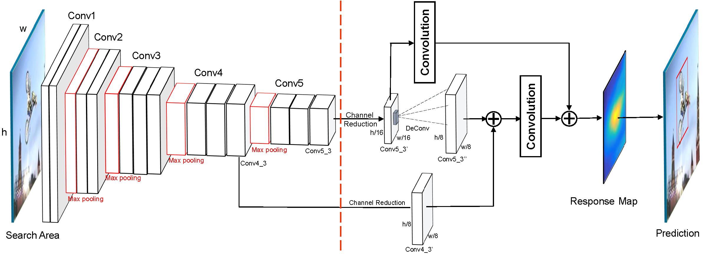

Deep Regression Tracking with Shrinkage Loss
Xiankai Lu1,3
Chao Ma2
Bingbing Ni1
Xiaokang Yang1
Ian Reid2
|
|  |
Abstract
Regression trackers directly learn a mapping from a regularly dense sampling of target objects to soft labels (generated by a Gaussian function) to estimate target positions. Due to the potential for fast-tracking and easy implementation, regression trackers have received increasing attention recently. However, state-of-the-art deep regression trackers do not perform as well as correlation filter based trackers. We identify the main bottleneck as the extreme foreground-background data imbalance in regression learning. To balance training data, we propose a shrinkage loss to penalize the importance of easy training data. To further facilitate regression learning, we apply residual connections to fuse multiple convolutional layers as well as their output response maps. Without bells and whistles, the proposed deep regression tracking method performs favorably against state-of-the-art trackers on four benchmark datasets including OTB-2013, OTB-2015, Temple-128, UAV-123 and VOT- 2016..
Demo
Downloads
| [DSLT.pdf] | : The paper. |
| [Poster.pdf] | : The poster. |
| [Results.zip] | : The OPE results on the OTB2013, OTB2015 and VOT2016 benchmarks. |
| [Code.zip] | : Available on Github. |
BibTex (DOI)